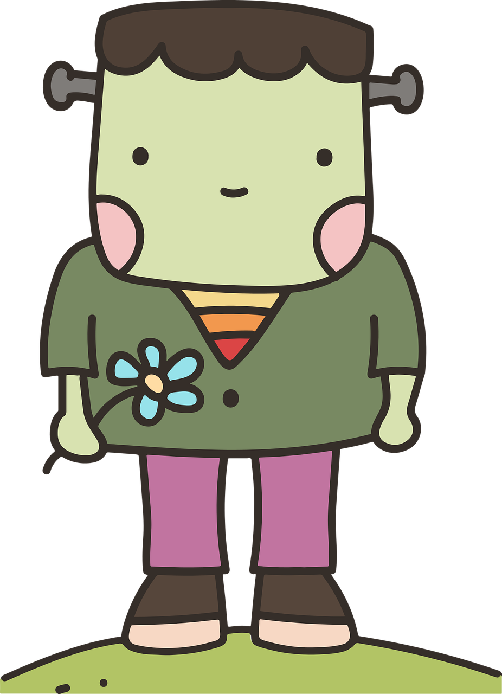
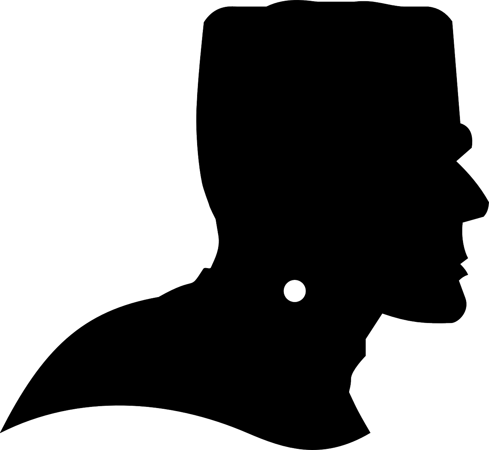
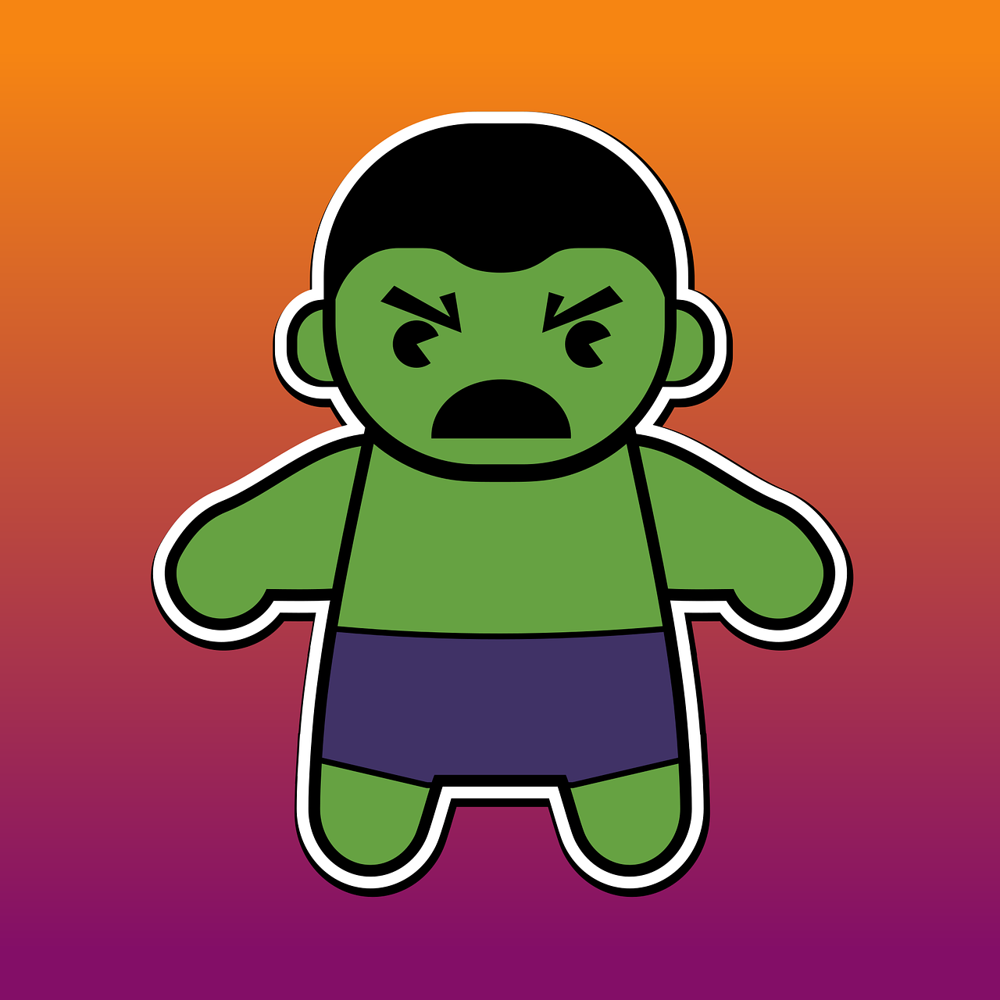

Relationships in Frankenstein
I think that Victor Frankenstein feels obligated to marry Elizabeth because they were betrothed from childhood rather than Victor truly loving Elizabeth. Since it was his mother's dying wish for them to marry, as well as what his father says would make him the happiest, there is a lot of outside pressure on them to marry. Victor was also "promised" Elizabeth from the time they met, so the expectation for them to marry was on them since they were children and lasted for over a decade. In all of that time, they were aware that they would end up marrying, but as far as their relationship is depicted, they were just "playmates" in childhood and then friends, so they never had any actual romantic involvement with each other.
Also, Victor never wrote to Elizabeth when he was in Ingolstadt, and he seemed to rarely think about her unless she sent him a letter or something else occurred to remind him of her existence. When he is in Geneva, it's true that he is distracted by more pressing matters in terms of the monster, but he doesn't seem to spend much time with Elizabeth or really want to marry her, as he doesn't express any desire to unless prompted by Elizabeth or his father asking if he still wants to marry her. He seems to kind of see her as his property, as when she was first adopted she was presented as a “gift” or a plaything to Victor by his parents, so it doesn't seem like he really loved her.
The Monster's Reasoning in Frankenstein
The monster states that the only reason that he has committed murder is because of his loneliness. If he has a companion, which Victor would have to make for him, then the monster won't hurt anyone anymore since he won't be lonely. I agree more with the monster's assessment of himself, but I can see why Victor would think that the monster might not hold true to his word. The monster did show kindness and wanted to be good when he was observing the cottagers, such as by bringing them wood so they would have to do less work, and he didn't start off his life by hurting anyone. He only killed William when he was already feeling extremely rejected from society because of what happened with the cottagers, and upon realizing that William was a Frankenstein, who he wanted to get revenge on.
If the monster has a companion, then he probably won't kill or harm anyone since he won't feel lonely. However, since he has already had a taste of bloodlust, it's possible that it wouldn't be so easy to let it go even if he does have a companion, or that it won't actually be enough for the monster. Being rejected by society may still anger the monster even with a companion since only one creature would accept him, so he may still feel angry enough to kill. It's also possible that the monster that Victor creates as a companion might not even want to be a companion of the monster for whatever reason, so if that happens, the extra rejection may make the monster have even more bloodlust than before.
Inconsistencies in Frankenstein
Some of the details of the monster's story that I found to be so unbelievable that they could only be included in the very convoluted style of Frankenstein are that the monster has superhuman strength and speed and that he learned how to speak and read solely from eavesdropping on and watching the cottagers over a short period of time. The monster is supposedly strong and fast enough to disappear down mountains or kill a child in just a moment, though the latter seems more possible since children are fairly weak and the monster may be downplaying how long it actually took to kill William. However, the monster was created from human corpse parts, so it doesn't really make sense that he would be stronger and faster than regular humans - if anything, he would likely be weaker and slower because of that.
The monster's ability to read and speak just from watching the cottagers is also hard to believe, as he took much less time than an infant would to learn these things. Learning to read in this way is especially hard to believe, as the monster had a seemingly small area in the window that he could watch the cottagers through and not be caught, so it doesn't make sense how he would have seen clearly enough to read text through there. However, since the monster is made of human body parts, it's possible that having the brain of a human who once knew how to read and write could speed up the process for learning it a "second time".